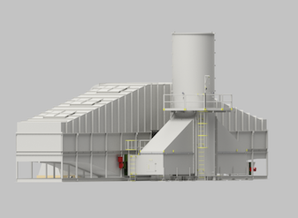

Maximizing Ventilation Air Methane (VAM) abatement at minimum cost
Based on the experience gained from its first VAM project, Biothermica has developed a Second generation Vamox® Regenerative Thermal Oxidizer (RTO) system fully optimized by Biothermica’s engineers to maximize carbon credits production in the most economical fashion.
For illustrative purposes, at 0,9%,v/v (the methane concentration typically observed on vent bleeder shafts in the U.S), this Vamox® system would generate about 750 tCO2e/24h (~260,000 tCO2e/year based on 95% uptime), with a total parasitic power consumption of only 700 hp (520 kW) approximately.

The VAMOX® technology provides many advantages and features, including:
- Proven fail-safe design and safety features exceeding MSHA’s requirements to ensure miners’ safety.
- Mechanical connection to the vent shaft designed to prevent any possible impact on the mine’s ventilation capacity while also preventing VAM dilution.
- RTO’s design can be customized using a proven process simulator to optimize the system’s performance over the specific range of VAM flow rate and methane concentration specified.
- Proprietary control strategy, including the auto-adjustment of process parameters based on methane concentration, in order to maximize performance and allow processing VAM with highly variable methane concentration up to 1.2% without experiencing overheat issues.
- Low parasitic power consumption and maintenance costs.
- Designed for facilitated relocation. System built in modular sections that can be easily dismantled and moved within ~2 months to different shafts throughout their service life, as the progression of underground mining activities lead to the commissioning of new ventilation fans.
SPECIFICATIONS (can be customized):
- Flow capacity → up to 140,000 acfm (~240 ,000 Nm3/h)
- Footprint→ 4,700 ft2 (44’X106’) / 416 m2 (13m X 32m)
- %CH4 Range→ 0.3% - 1.2%
- Methane destruction efficiency → up to 98%.